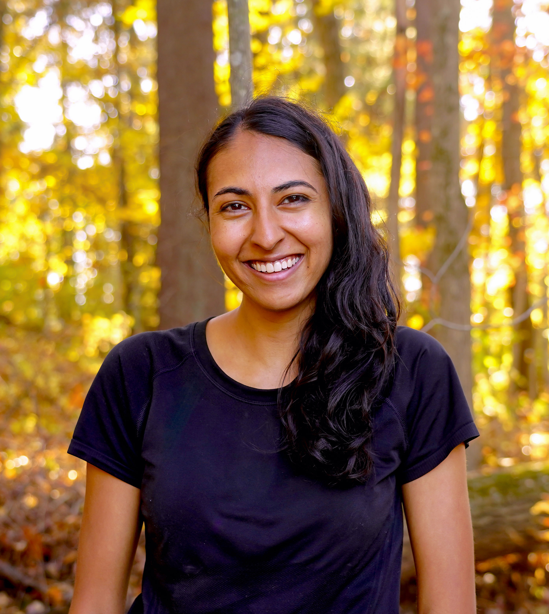

Please support breast cancer research!❤
Megha Srivastava
Hi! I am a PhD student in the Computer Science department at Stanford University. I am co-advised by Dorsa Sadigh and Dan Boneh and study various topics within human-AI interaction, including:
- Methods for robust machine learning, including mitigating bias amplification in online systems [1] and controlling GPU nondeterminism to enable verifiable training [2].
- Natural Language as a powerful interface to improve model reliability, such as incorporating humans' beliefs of the underlying causal model [3], informing shared latent actions for robotic control [4], and constraining policy learning to be more interpretable [5].
- Education applications, ranging from second-language learning [6] to embodied control skills [7, 8]. How can AI help us model student learning dynamics over time, identify the skills different individuals struggle to learn, and provide assistance that improves learning [9]?
- Interactive evaluations that extend beyond static benchmarks. For example, programmers can introduce security vulnerabilities when relying on code-generation models [10], and we see similar patterns of misplaced confidence when language models are used for information-seeking tasks, like question answering and solving crossword puzzles [11]!